I started the assessment by performing a port scan against the target in order to identify exposed services. The results indicated a web application as the main attack surface, so I focused my efforts on HTTP enumeration.
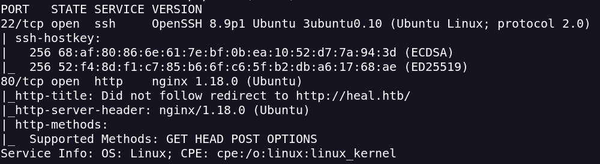
The next step was subdomain enumeration to discover additional virtual hosts that could expose hidden functionality. I used ffuf with a common subdomain wordlist and fuzzed the Host header against the main domain.
ffuf -w /usr/share/seclists/Discovery/DNS/subdomains-top1million-5000.txt -u http://heal.htb -H "Host: FUZZ.heal.htb" -fc 404 -mc 200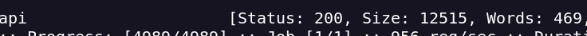
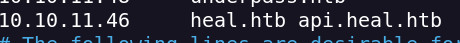
One of the discovered subdomains exposed a web application that revealed its version information, which was useful for identifying potential vulnerabilities.
Further enumeration revealed multiple directories on another subdomain. This significantly increased the attack surface and warranted deeper directory brute-forcing.
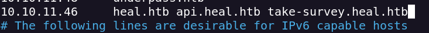
The following subdomain appeared to host a LimeSurvey instance: http://take-survey.heal.htb/.
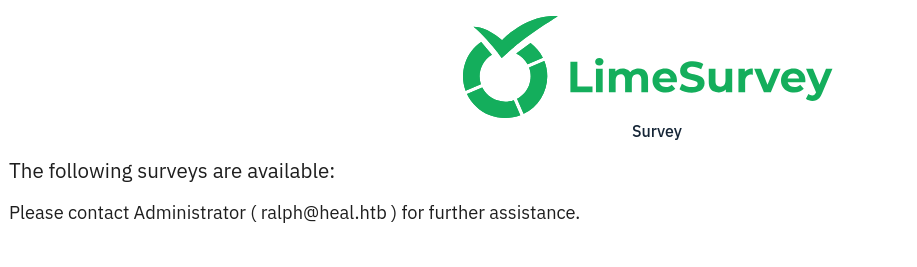
This application exposed a large number of directories, so I used dirsearch to brute-force additional paths and files, including archived content.
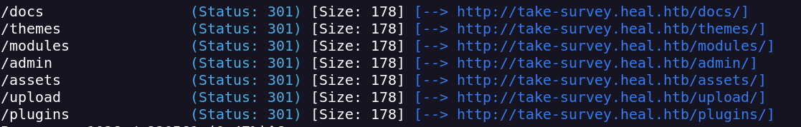
dirsearch -u "http://take-survey.heal.htb/index.php/" -t 50 -i 200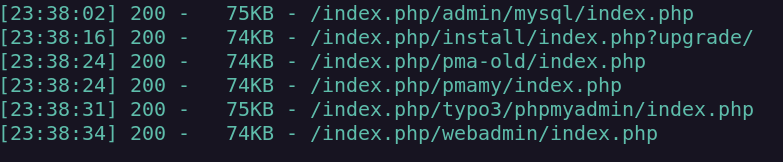
The enumeration revealed an administrative login panel for LimeSurvey.
http://take-survey.heal.htb/index.php/admin/authentication/sa/login
While navigating the application, I noticed a feature that allowed exporting content to PDF, which suggested a potential Local File Inclusion vector.
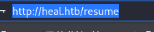
I intercepted the PDF export request to analyze how files were being fetched by the backend.
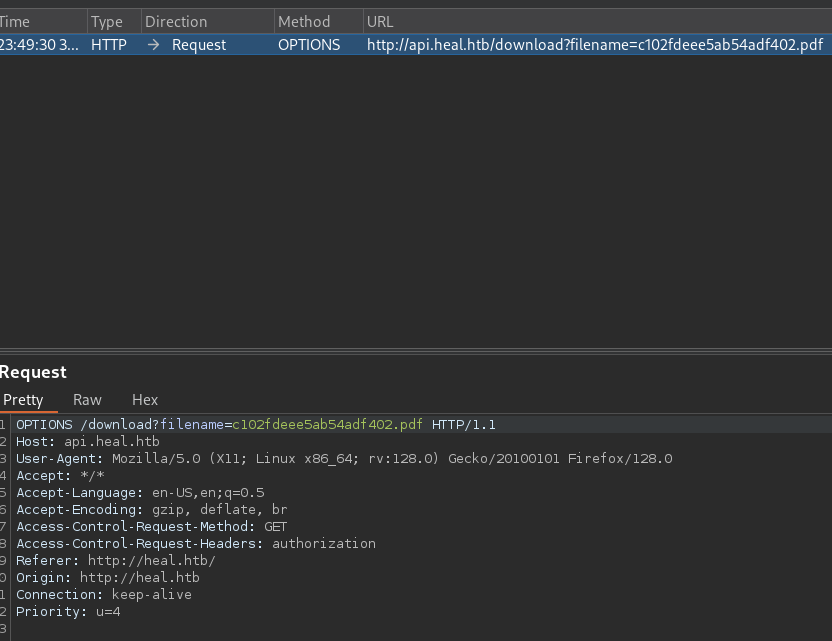
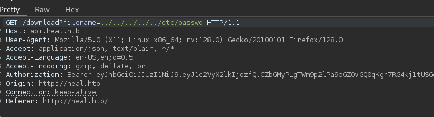
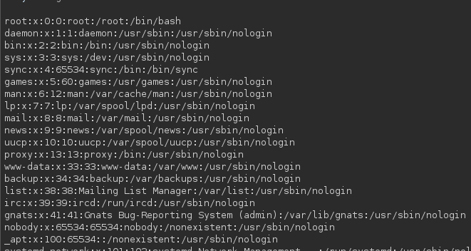
By manipulating the request, I attempted to retrieve sensitive configuration files, starting with database.yml.
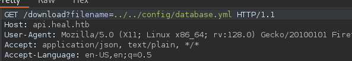
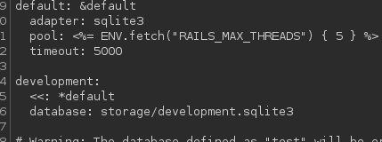
The database file was successfully downloaded, revealing a password hash belonging to the user ralph.
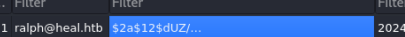
I cracked the hash using hashcat and recovered the following credentials:
ralph:147258369These credentials did not work over SSH, but they were valid for the LimeSurvey application, granting access to Ralph’s administrative panel.
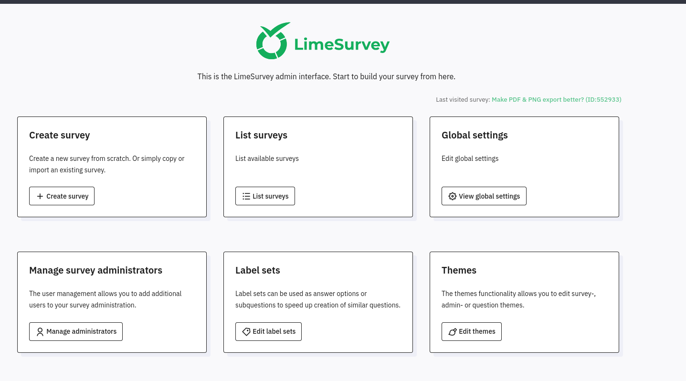
The LimeSurvey instance was running version 6.6.4, which is known to be vulnerable to remote code execution.
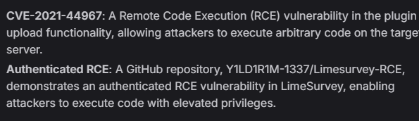
To exploit the vulnerability, I prepared a malicious plugin by zipping a reverse.php file together with a compatible config.xml from version 6.0. I uploaded the plugin through the LimeSurvey interface and activated it.
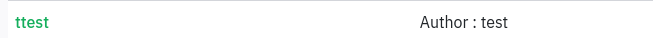
After activation, I triggered the reverse shell by accessing the plugin through the corresponding URL. This resulted in a shell as the www-data user.
While enumerating the system, I found database credentials inside the LimeSurvey configuration file located at:
/var/www/limesurvey/application/config/config.php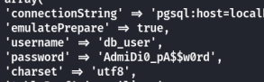
The credentials belonged to the user ron, which allowed me to authenticate over SSH.
ron:AdmiDi0_pA$$w0rd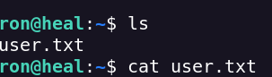
Once logged in as Ron, I uploaded linpeas to identify potential privilege escalation vectors on the system.
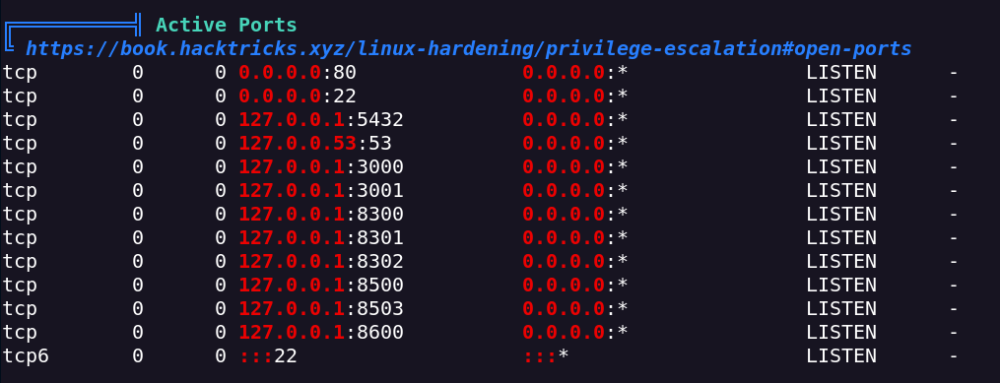
During enumeration, I discovered a local service listening on port 8500. To interact with it, I created an SSH port forwarding tunnel.
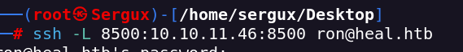
After forwarding the port, I enumerated the exposed services and identified HashiCorp software running version 1.19.2.
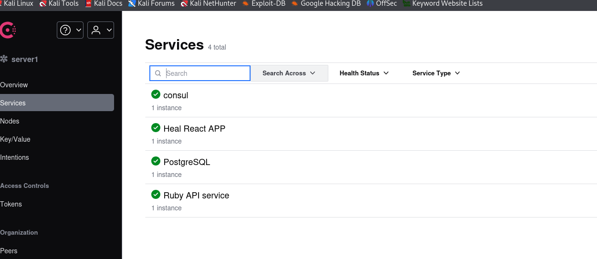
I searched for known vulnerabilities affecting this version and found a relevant exploit published on Exploit-DB.
https://www.exploit-db.com/exploits/46074
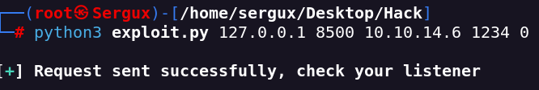
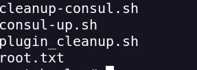